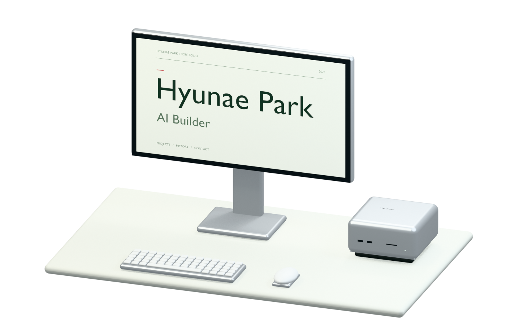

Hyunae Park
AI Builder
PORTFOLIO

Drag to rotate
Projects
04 PROJECTS / 2025—2026


04 / 2026.09
Anatomy Atlas

System separation · search · level of detail · original-model export
View project ↗Experience
Full history · 2017–2026 ↗LIKE Corporation
AI product engineeringClinical RAG, a meeting assistant, internal products, and generative content.
Smart Docent
Team lead · four peoplePlanning and development of a location-aware AI guide, connecting problem definition and implementation.
Beyond Coding
Coding instructor · English-language classesCoding classes for international-school students, explaining technical ideas to a different audience.
Korea University
Computer software · brain and cognitive scienceGraduated with interdisciplinary study in computer software and brain/cognitive science, with a Computer Science exchange at NUS.
Contact
hyunaeee@gmail.com ↗
South Korea · Korean / English